Resumen
1. Bootstrap
- Para usar el framework Bootstrap en un proyecto Flask, lo vamos a integrar a nuestros templates
- Esto lo haremos a través de una extensión llamada Flask-Bootstrap
- Para instalarlo, dentro de venv, usamos el comando
pip install flask-bootstrap
- A su vez, hay que importar Bootstrap del paquete flask_bootstrap, en el app del proyecto
- Inicializar el objeto Bootstrap
Importamos e inicializamos bootstrap
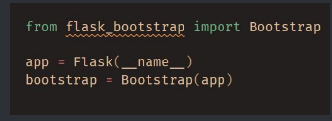
La integración a los templates se hace utilizando un bloque extends:
{% extends "bootstrap/base.html" %}
- Esta directiva de Jinja2 implementa la herencia de templates, referenciando a bootstrap/base.html del paquete flask_bootstrap
- El template base provee una página web base que incluye CSS de Bootstrap y archivos JS
- El template base.html de flask_bootstrap define varios bloques que pueden utilizarse en templates:
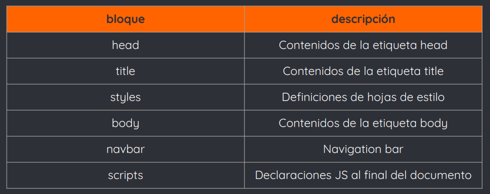
2. Web Forms
- Recordemos que el objeto request, que vimos la clase pasada, expone toda la información enviada por el cliente con un request
- Particularmente, request.form provee acceso a los datos de formulario enviados en POSTs
- Si bien podemos utilizar el objeto request para el manejo de formularios, algunas acciones pueden resultar repetitivas y complejas (como generar código HTML de forms o validar datos enviados)
- Para facilitar esto, existe la extensión Flask-WTF
- Por defecto, Flask-WTF protege los formularios contra Cross-Site Request Forgery, o falsificación de petición en sitios cruzados
- Un ataque CSRF ocurre cuando software malicioso envía comandos no autorizados a un website en donde la víctima está loggeada
- Ejemplo de ataque CSRF
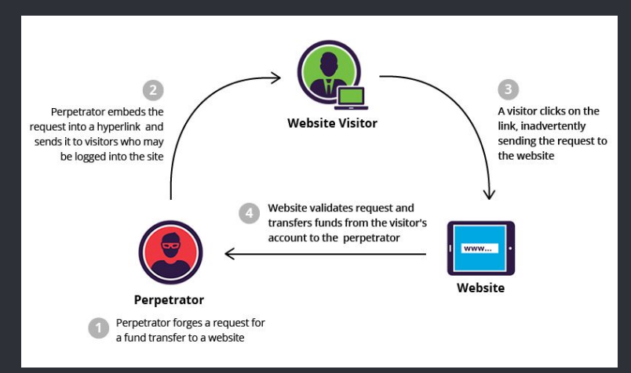
- Para implementar la protección CSRF, Flask-WTF necesita que la aplicación configure una key de encriptación, un token
- Flask-WTF usa esta key para generar tokens encriptados, que luego se utilizan para verificar la autenticidad de los requests de formularios
- Para instalar Flask-WTF y sus dependencias, utilizamos el comando pip install flask-wtf, previamente en venv
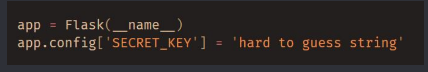
- Cuando se usa Flask-WTF, cada form es representado por una clase, la cual hereda de la clase Form
- La clase define una lista de campos en el formulario, cada una representada por un objeto
- Cada uno de estos objetos puede tener uno o más validators
- Un validator es una función que valida el input de un usuario
- Ejemplo de un form con un campo text y un botón de submit
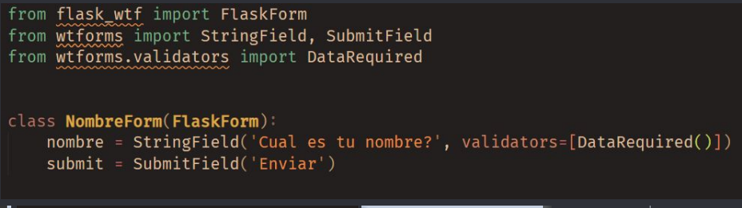
- Los campos de los formularios se definen como variables de clase
- A cada variable de clase se le asigna un objeto asociado con el tipo de campo
- En el ejemplo, el formulario NombreForm tiene un input de texto (nombre) y un botón de submit (enviar)
- La clase StringField representa un < input> de type=”text”
- La clase SubmitField representa un < input> de type=”submit”
- El primer parámetro de los constructores de cada campo del form es el label que se usará al renderizar el HTML
- El parámetro de validators es opcional
- Define una lista de validaciones que se le aplicarán al dato enviado por el usuario antes de que se acepte
- En el ejemplo, DataRequired() es un validator que valida que el campo enviado no esté vacío
- Tener en cuenta que la clase Form se define en la extensión Flask-WTF, mientras que los campos y los validators se importan directamente del paquete WTForms
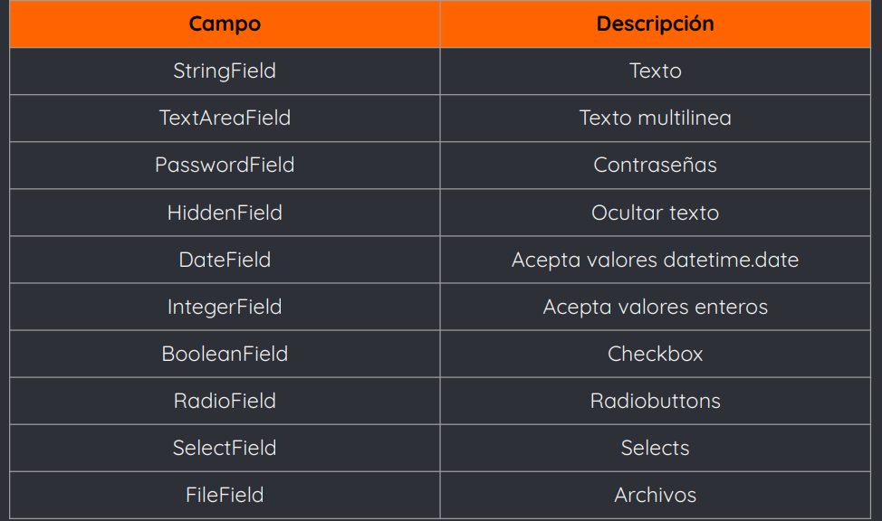
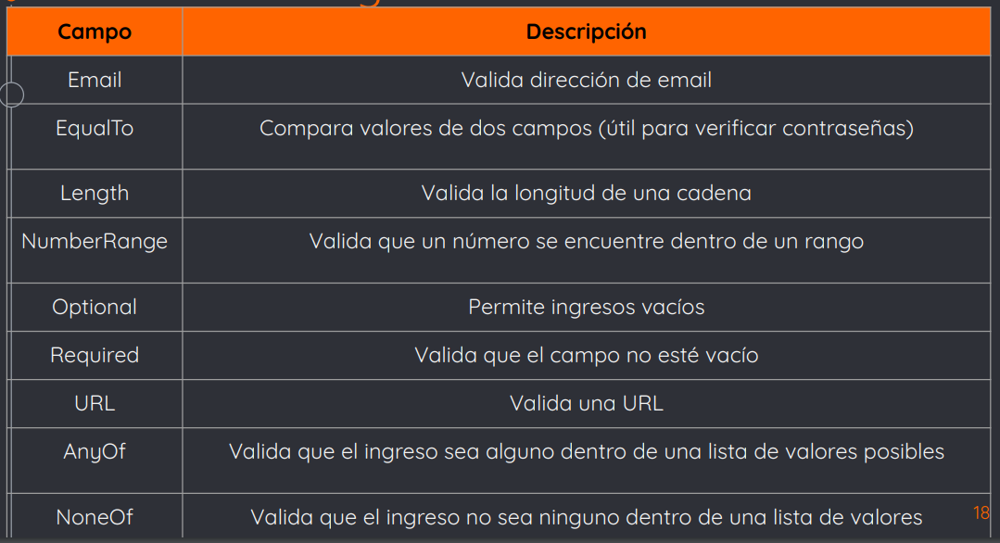
- Los campos de un Form pueden ser invocados desde un template y renderizarse en HTML
- Suponiendo que la función view pasa una instancia de NombreForm al template como parámetro “form”, el template puede generar un HTML simple:
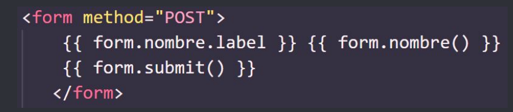
- Puede mejorarse la vista de estos forms pasando cualquier argumento a las llamadas que renderizan campos
- Por ejemplo, un id o un atributo class y luego añadir CSS o clases de bootstrap
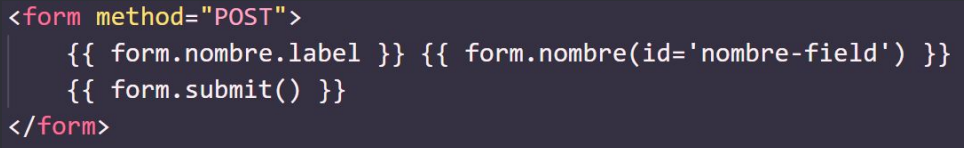
- Pero también podemos utilizar Bootstrap para agregar estilos y facilitarnos el trabajo
- Flask-bootstrap provee una función helper que renderiza un formulario Flask-WTF con un solo llamado
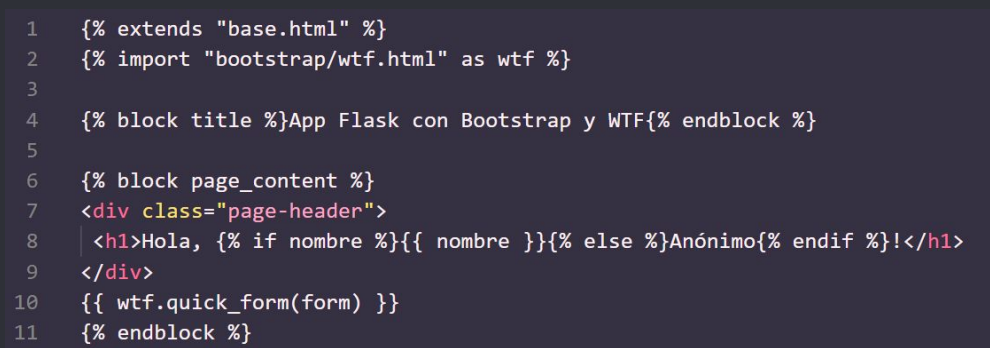
- En el ejemplo, vemos que utilizamos un template condicional, con la forma:
{% if variable %}...{% else %}...{% endif %}
- Luego renderizamos el contenido del NombreFormulario utilizando la función wtf.quick_form()
- Por el lado de las view functions, index() va a renderizar el formulario y recibir los datos
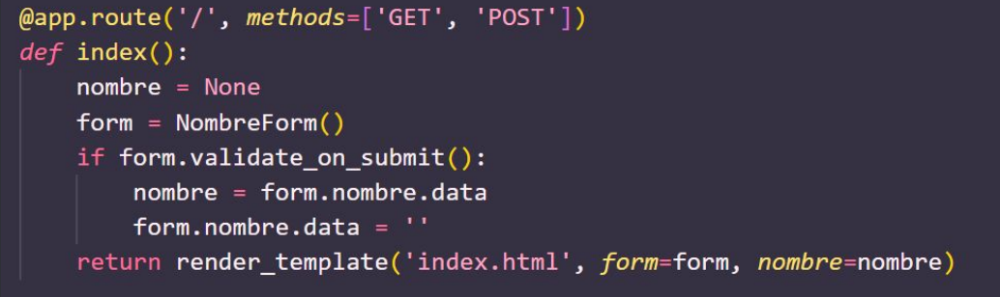
- El parámetro methods en app.route le indica a Flask que registre la función view como un handler para GET o POST. Por defecto, methods es GET
- La variable local nombre se utiliza para almacenar el nombre recibido del formulario cuando se ingrese
- La función view crea una instancia de NombreForm y lo almacena en form
- El método validate_on_submit devuelve True cuando el form es enviado y los datos fueron validados correctamente, caso contrario devuelve False
- Notemos que el retorno de este método nos sirve para decidir si debemos renderizar o procesar el formulario
- Cuando un usuario navega por primera vez a la aplicación, el servidor recibe un GET sin datos de formulario, por lo que validate_on_submit devolverá False. El cuerpo del if se salteará y el manejo del request implicará renderizar el template
- Cuando el usuario envía el form, el server recibe un POST con los datos del mismo. La llamada a validate_on_submit invoca al validator Required. Si el nombre no está vacío, validate_on_submit devolverá True. Luego el nombre ingresado por el usuario estará almacenado en el atributo de la instancia de NombreForm y la llamada a render_template mostrará el saludo personalizado
- Si el usuario envía el formulario con un nombre vacío, el validator Required captura el error y lo muestra
- Notemos cuántas cosas se nos facilitaron al utilizar la extensión Flask-WTF y Flask-Bootstrap
- Para el código anterior, cuando el usuario haya completado el campo de nombre y quiera refrescar la página, el browser mostrará un mensaje de reenvío de formulario
- Esto sucede porque los browsers repiten el último request que enviaron para refrescar la página
- Si el último request enviado fue un POST, el reenvío de dicho request provocará duplicados del envío
- Para evitar esto, es buena práctica no dejar nunca un request POST como último request enviado por el browser
- Esto se logra respondiendo los POST con redirects
- Un redirect es un tipo especial de respuesta que tiene una URL en vez de un string con código HTML
- Cuando el browser recibe esta respuesta, envía un GET para la URL, y esa página se muestra
- Por lo tanto, nuestro último request enviado es un GET, por lo que el refresh no mostrará el mensaje
- Esto se conoce como patrón POST-REDIRECT-GET
- El problema que se presenta ahora, es que perdemos datos del formulario apenas termina el POST
- Por lo tanto, la aplicación necesita almacenar el nombre
- Esto se logra almacenando los datos en la session de usuario, un almacenamiento privado que tiene cada cliente conectado
- La session de usuario está asociada al contexto request
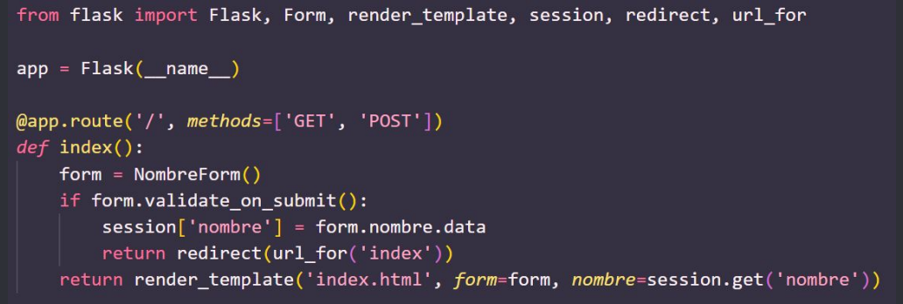
- Ahora, la variable se almacena en la sesión de usuario, haciendo session[“nombre”] (tipo diccionario)
- Cuando lleguen datos válidos ingresados, el flujo terminará generando un response de redirect
- El redirect() tiene la URL a la que se debe redirigir como parámetro, utilizando url_for()
- El parámetro de url_for() es el nombre del endpoint, es decir, el nombre que cada ruta tiene internamente
- Por último, render_template() ahora obtiene el nombre directamente de la session, ,usando session.get(‘name’)
- Es buena práctica indicarle al usuario el estado de las cosas luego de que se complete un request
- Esto podría ser un mensaje de confirmación, un error o una advertencia
- Por ejemplo, si se envía un formulario de login con un error, el server responde renderizando el form de login otra vez con un mensaje que informa que hay datos inválidos
- Con Flask, podemos utilizar la función flash()
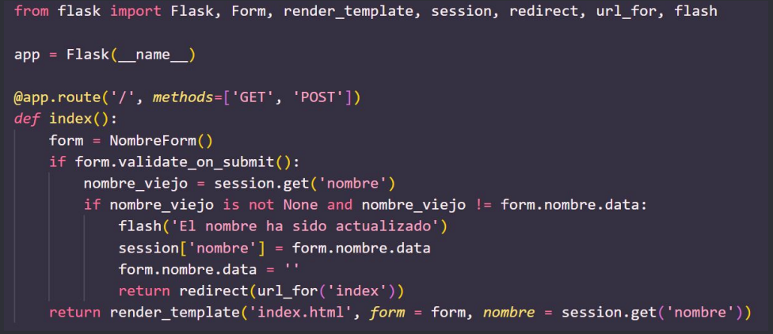
- En el ejemplo, cada vez que se envía un nombre, se compara contra el nombre almacenado en la sesión
- Si los dos nombres son distintos, la función flash() se invoca con un mensaje que se enviará al cliente
- Para que los templates rendericen los mensajes, hay que utilizar la función get_flashed_messages
- Lo mejor es utilizarlos en el template base
- En el base.html:
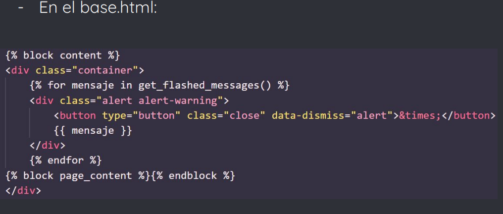
- Se utiliza un loop porque podrían haber múltiples mensajes a mostrar, uno cada vez que flash() se llama en el ciclo de requests
- Los mensajes que se obtienen de get_flashed_messages() no volverán a mostrarse la próxima vez que se llame la función, por lo que los mensajes “flasheados” aparecen sólo una vez, luego se descartan
3. Bases de datos
Una base de datos almacena datos de una aplicación de manera organizada
- La aplicación emite queries para recuperar datos específicos cuando los necesite
- Las bases de datos generalmente más utilizadas en aplicaciones web son las relacionales, es decir, las SQL
- Python tiene paquetes para la mayoría de los gestores de bases de datos, y Flask los soporta todos
- Nosotros vamos a trabajar con SQLite y usaremos la extensión Flask-SQLAlchemy para el manejo
- Flask-SQLAlchemy es una extensión de Flask que facilita el uso de SQLAlchemy dentro de aplicaciones Flask
- SQLAlchemy es un framework de base de dato relacional con múltiples herramientas y un mappeador relacional de objetos (ORM)
- Para instalarlo, dentro de venv, utilizamos el comando
pip install flask-sqlalchemy
- En Flask-SQLAlchemy, una base de datos se especifica a partir de su URL
- Para SQLite, la URL es del siguiente formato
sqlite:///c:/absolute/path/to/database
- La URL de la base de datos debe ser configurada como la key SQLALCHEMY_DATABASE_URI en el objeto configuration de Flask
- Otra opción útil es la key SQLALCHEMY_COMMIT_ON_TEARDOWN, que se puede settear a True para activar el commit automático de cambios en la base de datos al final de cada request
- El objeto db que se instancia desde la clase SQLAlchemy representa la base de datos
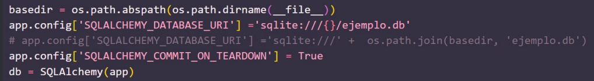
- El término modelo se utiliza para referirnos a la persistencia de entidades usadas por una aplicación
- En una ORM, un modelo es, generalmente, una clase de Python con atributos que coinciden con las columnas de una tabla de la base de datos correspondiente
- La instancia db de Flask-SQLAlchemy provee una clase base para modelos, así como también un conjunto de clases helper y funciones que se utilizan para definir su estructura
- En el siguiente ejemplo, definimos dos clases que se traducirán a tablas en nuestra base de datos
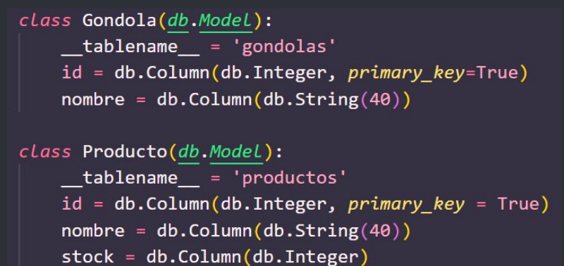
- __tablename__ es una variable de clase que define el nombre de la tabla en la base de datos
- Las demás variables de clase son los atributos del modelo, definidos como instancias de db.Column
- El primer argumento del constructor de db.Column es el tipo del dato que almacena la columna en la base
- Algunos de los tipos más comunes de columnas y algunas configuraciones para ellas se muestran en las siguientes tablas:
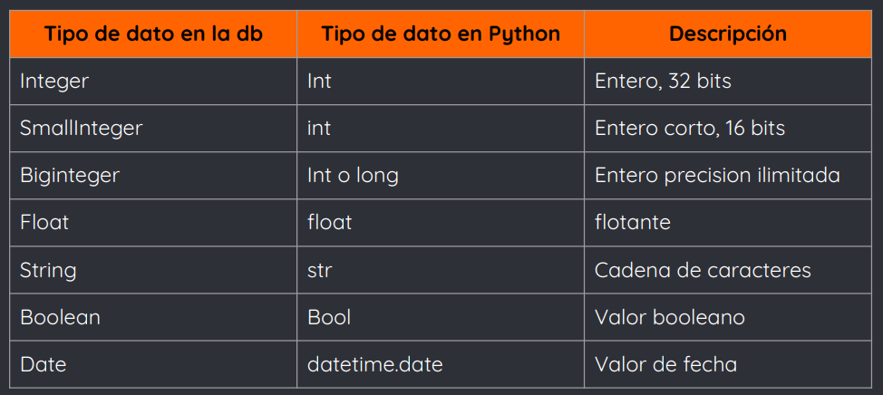
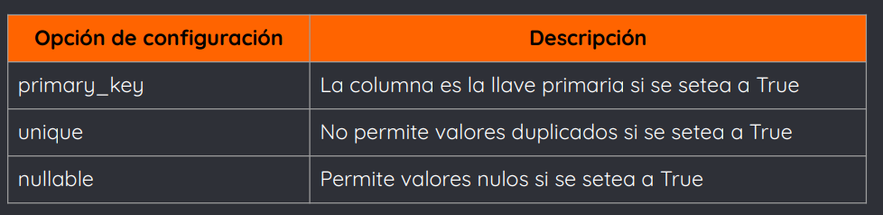
- Aunque no es necesario, ambos modelos incluyen el método __repr__()
- En este método se define una representación en string del modelo, se utiliza con fines de debugging y testing
4. Relaciones
- Las bases de datos relacionales establecen conexiones entre filas de distintas tablas a través de las relaciones
- Para el modelo anterior, una gondola puede tener varios productos, es decir, es una relación one-to-many
- Esta relación puede definirse de la siguiente forma
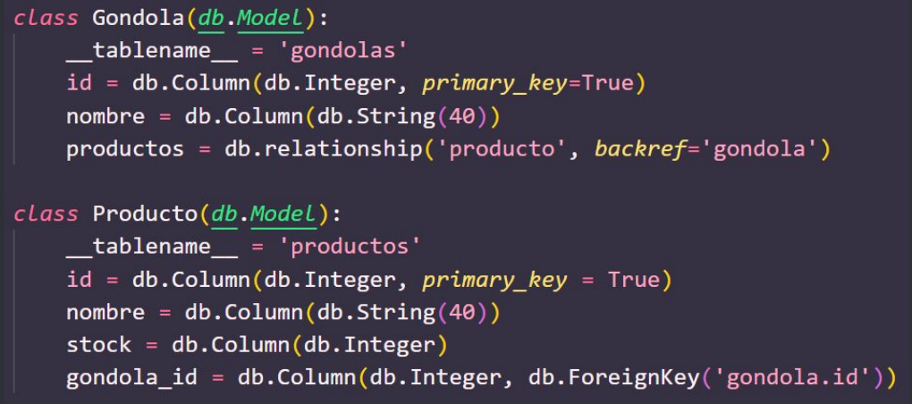
- La columna gondola_id en el modelo de Producto está definido como una foreign key, y eso establece la relación
- El argumento gondola.id especifica que la columna debe interpretarse como que tiene ids de filas en la tabla de Gondola
- El atributo productos agregado al modelo de Gondola representa una lista de productos asociados a la Gondola
- El primer argumento indica que el modelo está del otro lado de la relación
- El argumento backref define la dirección inversa de la relación al agregar un atributo gondola al modelo de producto
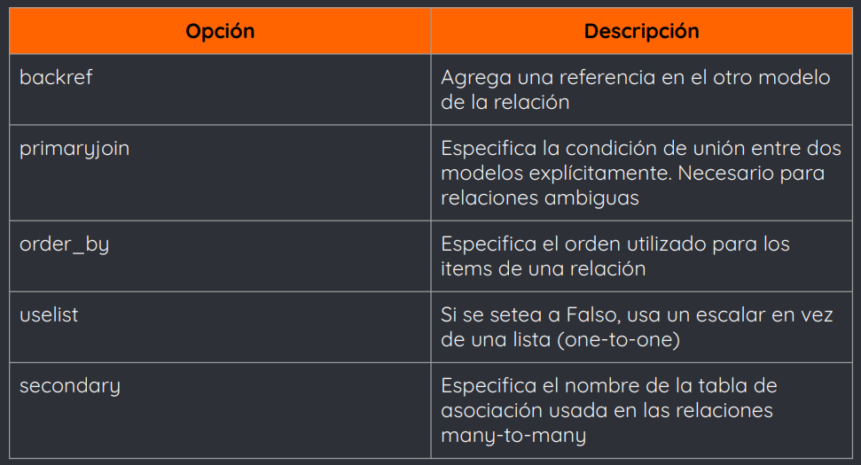
- Las relaciones one-to-one se definen como las one-to-many, pero utilizando la opción uselist seteada en False
- Las relaciones many-to-one pueden expresarse como las one-to-many, revirtiendo las tablas
- Las relaciones many-to-many requieren una tabla adicional llamada tabla de asociación (lo vamos a ver más adelante)